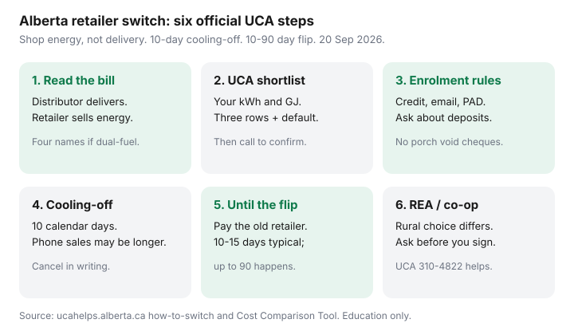

Utilities · Canada
How to Switch Electricity or Natural Gas Retailers in Alberta Step by Step
Switching feels opaque. People fear two bills or a mid-move disconnection. A switch energy retailer Alberta natural gas electricity walkthrough from the Utilities Consumer Advocate is dull on purpose: you shop the energy line, the wires company keeps delivering, and you keep paying the outgoing retailer until the flip date.
Price the market first with the UCA comparison guide and RoLR vs fixed. Gas-only winter math is in DRT vs contract. Fee literacy is in admin and exit charges.
Disclosure: There is no natural affiliate product in a regulated switching workflow. Saving Optimizer does not claim UCA, retailer, or distributor partnerships. This is education — not enrolment help or a recommendation of any offer.
Key takeaways
- The distributor (EPCOR, ENMAX Power, FortisAlberta, ATCO Electric, ATCO Gas, Apex, and similar) delivers. The retailer sells energy. Switching retailers does not change the pole or the pipe.
- Shortlist on the UCA Cost Comparison Tool, then contact the new retailer directly. UCA does not enrol you.
- Retailers may require a credit check, email, or pre-authorized debit. Alberta rules restrict cash deposits — confirm what they are allowed to ask before you wire anyone money.
- Competitive contracts: 10 calendar days cooling-off (phone contracts can have a longer statutory window). The switch itself takes 10–90 days. Pay the old retailer until the switch date.
- Rural Electrification Associations and many gas co-ops are not the same shopping menu. Confirm you actually have retail choice before you sign a Calgary flyer.
Confirm your distributor vs retailer roles on the bill
Alberta bills (or paired bills) split the job. Delivery, transmission, and most riders sit with the distributor. Energy ¢ and often an admin fee sit with the retailer. If you never signed a contract, the default electricity retailer bills the Rate of Last Resort (~12 ¢/kWh commodity to 31 Dec 2026, zone-specific) and the default gas retailer bills the Default Rate Tariff that moves monthly.
Write down four names: electricity distributor, electricity retailer, gas distributor, gas retailer. A bundle from one logo can still ride two distributors. If the complaint is “delivery exploded,” a new ¢ will not fix it.
| Role | Examples | What a switch changes |
|---|---|---|
| Electricity distributor | EPCOR, ENMAX Power, FortisAlberta, ATCO Electric, some REAs | Nothing — wires and most riders stay |
| Electricity retailer | Default RoLR book or a competitive brand | Energy ¢ and often the admin fee |
| Gas distributor | ATCO Gas, Apex, many gas co-ops | Nothing — pipes stay |
| Gas retailer | Default DRT book or a competitive brand | GJ ¢ and often the admin fee |

Shortlist with UCA, then contact the new retailer directly
Open the Cost Comparison Tool. Set postal code or city, fuel (electricity, gas, or both), and your kWh / GJ. Sort by estimated annual cost after admin fees, not by the bold ¢. Shortlist three rows: lowest annual, lowest-exit flexible plan, and the default (RoLR or DRT) as the baseline.
- Call or chat the new retailer. Confirm the ¢, monthly fee, term start, exit fee in dollars, and incentives that expire after month one.
- Check your current contract for notice or exit fees before you pile a new term on an old one.
- Enrol with the retailer. UCA does not flip the switch. The confirmation notice (email, phone, or mail) starts the cooling-off clock — read name, address, rate, and term.
If the tool row and the website disagree, believe neither until you have the rate in writing. UCA says so on the tool page for a reason.
Credit checks, deposits, and enrolment requirements
UCA’s how-to-switch page (used 20 Sep 2026) is explicit: retailers may have different sign-up rules, including credit checks, email accounts, or direct withdrawals. That is annoying and still not a reason to give a door-knocker a void cheque on the porch.
- Ask whether a deposit is required, how much, how it is held, and when it returns. Alberta marketing and utility rules restrict some cash-deposit practices — if a number feels invented, call UCA (310-4822) before you pay.
- You do not need to fail a credit check to stay on RoLR or DRT. Default service is not a punishment class.
- A retailer that will only enrol you on a dual-fuel bundle is asking you to shop two lines at once. Compare them separately first.
Ten-day cooling-off and how cancellation works
Every competitive retailer has a 10 calendar day cooling-off period: cancel for any reason without penalty; the previous retailer keeps serving you. Telephone marketing contracts can have a longer window (UCA notes phone contracts can run longer; Alberta marketing rules have described up to 60 days after the first bill in some phone-sale contexts). Read the confirmation, not a Facebook summary.
Cancel in writing (email is a timestamp). If you already have a site contract with extra rights, those stack — they do not replace the 10 days. RoLR and DRT have no cooling-off because they are not competitive contracts. You just leave.
What to pay until the switch date completes
UCA: the switch takes 10 to 90 calendar days. Ten to fifteen is common; 90 happens. You are responsible for the outgoing retailer until the switch date. Credits do not travel. Delivery never stops because you changed logos — the distribution company continues to supply energy.
If a new bill has not arrived within a month of the expected flip, call. An unbilled account becomes a catch-up bill. Do not ignore the old retailer because a confirmation email used the word “welcome.” Two bills for overlapping days can be correct; two full months of double energy usually is not — ask for the switch date in writing.
Rural Electrification Association and gas co-op caveats
Much of rural Alberta takes electricity from a Rural Electrification Association (REA) and gas from a gas co-op. Those members are often not on the urban competitive menu the Calgary flyer assumes. Some REAs have self-retail; some have arrangements that look like a default energy price without a UCA row that matches your neighbour’s ENMAX plan.
Before you sign anything:
- Read the bill header. If it says REA or a named co-op, call them and ask whether you can choose a competitive retailer at all.
- Do not let a salesperson “enrol” an REA site onto a city dual-fuel contract that cannot flow.
- Moving from a city rental to an REA acreage (or the reverse) is a new enrolment, not a logo swap.
UCA mediation exists when a contract and a bill disagree. Use it. Do not pay a “release fee” because someone was loud on the phone.
Sources & date stamps
- UCA, How to switch energy retailers — compare, contact the retailer, 10-day cooling-off, 10–90 day switch, keep paying the outgoing retailer (used 20 Sep 2026).
- UCA, Cost Comparison Tool — official shortlist; confirm posted rows with the retailer.
- UCA, Default rates — RoLR electricity to 31 Dec 2026; DRT gas monthly; excludes billing and delivery.
- UCA residential FAQ / how to choose a retailer — default vs competitive; typical 10–15 day setup, up to 90.
- UCA 310-4822 mediation — billing and contract disputes.
Frequently asked questions
Will I lose power or gas while I switch retailers in Alberta?
No. The distribution company keeps delivering. You pay the outgoing retailer until the switch date (10–90 days). Competitive contracts have a 10-day cooling-off if you change your mind.
Does UCA switch me if I click a plan in the comparison tool?
No. The tool is a shortlist. You enrol with the retailer directly. Confirm the ¢, fee, term, and exit in writing.
How long do I have to cancel a new competitive contract?
10 calendar days cooling-off without penalty. Phone contracts can have a longer window. After that, read the exit-fee clause.
I am on an REA. Can I use the same retailers as Calgary?
Not necessarily. Ask the REA (and your gas co-op) whether competitive retail choice applies to your site before you sign an urban flyer.
The new retailer has not billed me yet. Do I stop paying the old one?
No. Pay the outgoing retailer until the switch date. Call if a new bill has not arrived within a month of the flip.